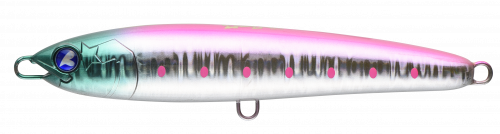
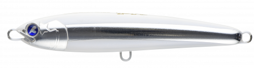
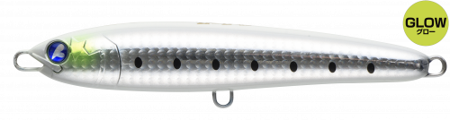
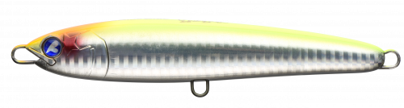

ガチペン130
（GACHIPEN 130）
ガチペン130はBlueBlue（ブルーブルー）のダイビングペンシルです。
ガチペンシリーズ最小のモデルで、マイクロベイトに偏食しているときやベタ凪の日など、大型のトップウォーターに反応しないときこそ出番が来る「喰わせ系ペンシル」。青物用タックルはもちろん、シーバス用タックルでも扱いやすいサイズです。

画像出典:BlueBlue公式HP
スペック
- メーカー
- BlueBlue（ブルーブルー）
- タイプ
- ダイビングペンシル（フローティング）
- 全長
- 130mm
- 自重
- 30g
- フック
- #1×2
- リング
- #5
- ターゲット
- 青物・シーバス
- 価格
- 2,450円（税別）
▼今すぐチェック

ガチペン130の特徴
コンパクトなシルエットで、スレた青物を誘い出す喰わせ系ペンシル
-
マイクロベイトパターンの切り札
コンパクトなシルエットとメリハリの効いたウォブンロールで、マイクロベイトに偏食した魚やスレた魚を誘い出します。
-
空気をまとってダイブ
大きく開いた口がたっぷり空気をまとって水中にダイブ。泡を引きながら潜るアクションで、水面直下の魚にアピールします。
-
貫通ワイヤーで安心
貫通ワイヤーを採用し、大型の青物が掛かっても安心してやり取りできます。
ガチペン130の使い方
基本はロッドをあおってのダイビングアクション。ロッドを大きくあおって潜らせ、浮き上がってくるのを待ってから次のアクションを入れます。
スキッピングやドッグウォークにも対応しているので、ナブラが出ているときは水面を滑らせるように速く引いたり、ベタ凪のときはゆっくりドッグウォークさせたりと、状況に合わせて使い分けましょう。
ガチペン130の得意な状況
マイクロベイトに偏食している青物、ベタ凪で大型のトップに反応しないとき。シーバスタックルでも扱えるので、港湾や河口に青物が入ってきたときにも使えます。
ワンポイント
ベイトが大きいときや、波があって大きなアピールが必要なときは、同じシリーズの160や200に持ち替えましょう。
ガチペンシリーズの使い分け
| モデル | 全長／自重 | 得意な場面 |
|---|---|---|
| ガチペン130 | 130mm／30g | マイクロベイトやベタ凪のときの喰わせに（本記事のモデル） |
| ガチペン160 | 160mm／53g | ショアの青物狙いの基準サイズ |
| ガチペン200 | 200mm／90g | 大型のヒラマサやブリなど大物狙いに |
ガチペンはサイズでアピールの強さが変わります。ベイトの大きさと海の状況に合わせて選びましょう。
人気カラー
公式ラインナップから4色を紹介します（カラー名は公式の表記のまま）。

#02 ピンクイワシピンクの背中のイワシカラー。朝マズメの基準カラーに。

#04 蒼白ベイト青白いナチュラルカラー。澄み潮やベタ凪で見切られにくくしたいときに。

#06 グローグローグロー系のカラー。夜明け前や暗い時間帯に。

#07 サイトチャートオレンジチャートとオレンジで視認性が高いカラー。ルアーの位置を見ながら操作したいときに。
画像出典:BlueBlue公式HP
ガチペン130に似ているルアー
-
 オセロスペンシル130F
シマノ
詳細はこちら＞
オセロスペンシル130F
シマノ
詳細はこちら＞
全長130mmのフローティングペンシル。同じサイズで、ドッグウォーク主体で誘いたいときに。
-
 ポップクイーンS105
マリア
詳細はこちら＞
ポップクイーンS105
マリア
詳細はこちら＞
全長105mm・自重30gのシンキングポッパー。同じ重さで、スプラッシュで強くアピールしたいときに。
-
 ソニックブーム SBショット115S
デュエル
詳細はこちら＞
ソニックブーム SBショット115S
デュエル
詳細はこちら＞
全長115mm・自重40gのシンキングペンシル。水面で出ないときに、少し下のレンジを探りたいときに。